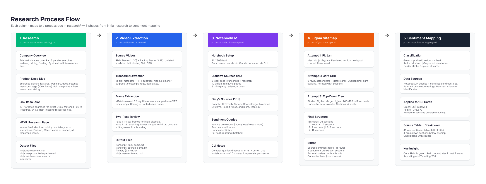
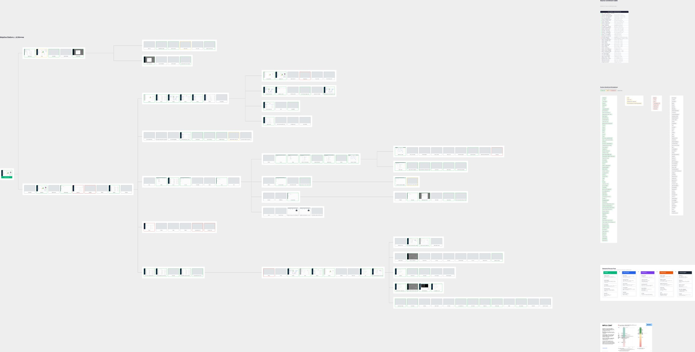
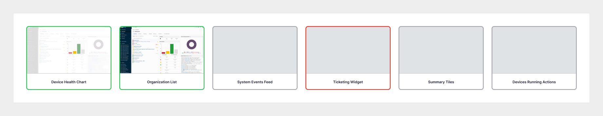
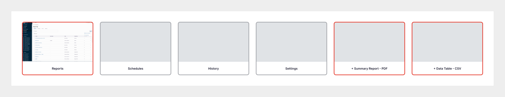
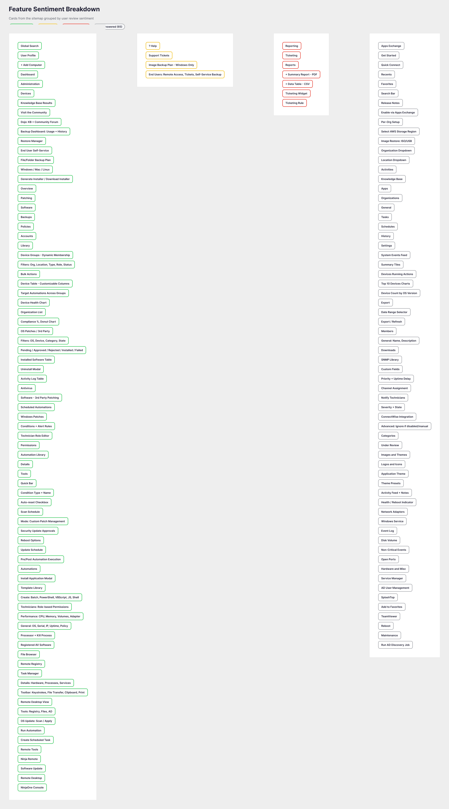
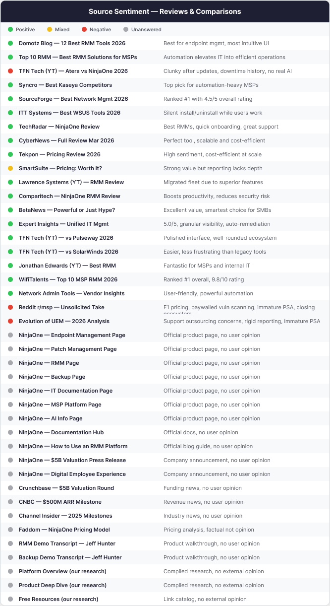

NinjaOne, Product UX Research
Before a conversation with NinjaOne, I taught myself their entire platform. I mapped every screen of a complex enterprise IT product into a single sitemap, then overlaid what real users praise and criticize on top of it. Built in hours, not weeks, with an AI-assisted research pipeline.
My role: Self-directed research, start to finish. I designed the method, ran the pipeline, and built every artifact: a five-phase research workflow, a 168-card platform sitemap, a sentiment overlay tied to 40+ review sources, and an interactive research summary. The goal was to show up already fluent in the product and honest about where it frustrates users.
The research pipeline
I treated "learn this product" as an engineering problem and built
a repeatable pipeline instead of clicking around. Five phases, each
mapped to its own process doc: source research, video extraction
from the product demos, a NotebookLM sentiment pass over 40+
sources, the Figma sitemap build, and the sentiment mapping. The
AI-assisted stack did the heavy lifting: Claude driving NotebookLM,
yt-dlp, ffmpeg, and the Figma Plugin API.
That is what turned an end-to-end teardown of an unfamiliar
enterprise platform into a few hours of work instead of weeks.

The deliverable, a full platform sitemap
The output is a single map of the entire NinjaOne console: the root, the top bar and sidebar, every dashboard tab, the policy and condition editors, the device views, the remote-session tools, and the quick-action menu. That's 168 cards across four levels of depth, each carrying a real screenshot of the screen it represents, reconstructed from the demo footage frame by frame. One picture the whole product fits inside.

Sentiment, mapped onto the structure
A sitemap shows what exists. The value was in layering on what users actually think. Every card got a border color drawn straight from the review analysis, so the whole product reads at a glance: strengths in green, complaints in red.
- Praised (86)
- Mixed (4)
- Criticized (8)
- Not mentioned (70)


The findings, and where I'd start
Sorting every card by sentiment turns the map into a punch list: 79 features in the green, 4 mixed, 65 that never surfaced in the reviews, and 7 that need work. Those 7 are the backlog I'd open on day one: reporting with its PDF and CSV exports, and the whole ticketing / PSA path. Nothing else in the product competes for attention first.

The takeaway
Behind the colors is a 41-source sentiment table, every review, article, and demo I drew from, each rated and summarized. The pattern that fell out of it is the headline a designer or PM would actually want:
The core RMM product is overwhelmingly green. The red doesn't scatter. It concentrates in exactly two areas: reporting and ticketing / PSA.

A complete, opinionated read on an enterprise product I'd never used: method, map, and sentiment, built solo in hours. It's how I'd want to show up to any product team, already fluent, already honest about the rough edges, and able to prove it on one page.